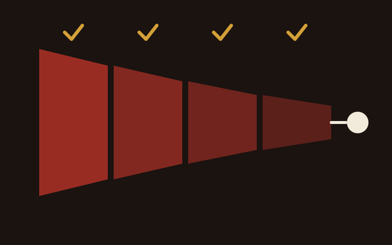
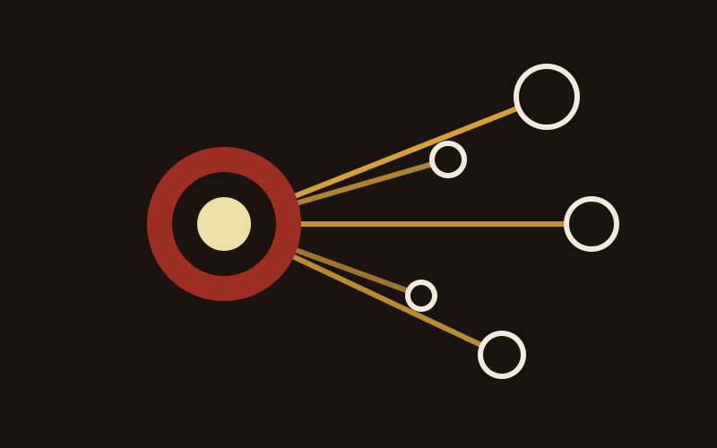
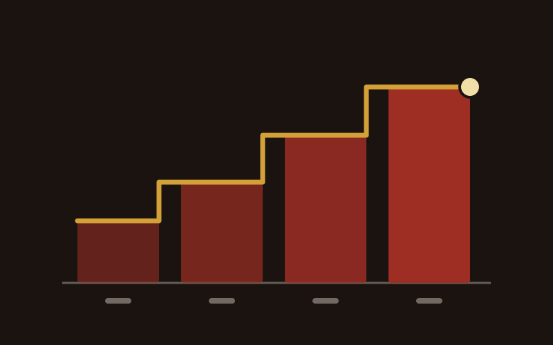

NDIS Google Ads
Reaching participants takes more than showing up. How Google Ads connects you with people actively searching for your services.
Read more
Digital is how small and medium providers get found now. This is what belongs in the plan, in the order I would build it, and the parts that get skipped and cost the most.

Almost every digital plan I am asked to look at starts with a channel. Whether to run ads. Whether to be on TikTok. That is the wrong end of the problem, and it is why the money goes out without much coming back.
Start with the people. A provider is not talking to one audience, it is talking to four, and they want different things.
Participants are deciding whether you understand their situation. Families and carers are usually the ones doing the searching and the shortlisting, often late at night and often exhausted. Support coordinators are deciding whether you are safe to refer, and their reputation rides on it. And your own staff are reading everything you publish, because it tells them what kind of place they work at.
One message will not do all four jobs. Work out what each of them needs to know before choosing where to say it.
Ask. Short surveys to the families you already serve. A proper conversation with two or three coordinators who refer to you, about what makes them choose one provider over another. Listen to what comes up in enquiry calls. Look at what people actually type to find you, which is in your Search Console whether or not anyone has opened it.
Reach and impressions are not results. The numbers worth reporting on are participant enquiries, how many of those became agreements, where they came from, and how many referrals came out of your coordinator relationships. If a metric cannot change a decision you make next month, it does not belong in the report.

There are seven channels I would consider for a provider, and no provider should run all seven at once. What matters is which two or three you can do properly, and what order they go in.
Search is the floor. People type NDIS support coordinator near me and disability services plus their suburb, and either you appear or you do not. That means a page for each service and each area you genuinely cover, a Google Business Profile that is filled in, and the technical basics working. It takes months, and it keeps paying afterwards.
Paid search is what you use while that builds. It reaches people looking this week and it starts the day you switch it on. It also stops the day you stop paying, which is why it is a bridge rather than a strategy.
Paid social reaches families before they have started searching, which is a different and useful job. Social and content is what makes you recognisable when they do start. Email is what keeps you in front of the people who enquired and were not ready, which is a larger group than you would like.
Coordinator and allied health relationships are the highest converting source a provider has, and they need almost no ad spend. They need someone to actually maintain them. And what happens after the phone rings decides whether any of the above was worth doing.
If the phone is quiet and you need enquiries this quarter, start with paid search and the enquiry process. If enquiries are arriving and going nowhere, start with the enquiry process alone. If you are already busy and want it to keep going without paying per click, start with search and referrals. That is the whole decision tree, and it is shorter than most plans make it look.

This is the part I feel strongest about, so I will be blunt. Ditch the stock photos and the generic template designs. A family choosing a provider is trying to work out what it will feel like to hand somebody they love into your care. A photograph of four models laughing around a laptop tells them nothing, and worse, it tells them you had nothing real to show.
Show your team. Show the rooms. Show the vehicles and the whiteboards and the actual people who will answer the phone. It is harder than buying a photo and it is the single biggest difference between a provider site that converts and one that does not.
A content calendar that mixes three things: pages that answer the questions families ask before enquiring, stories from your own team and the people you support, and plain updates such as a new service area or availability. Video works harder than anything else here, and phone-shot video of a real staff member beats a produced piece with hired actors.
Nothing featuring a participant goes anywhere without informed, specific, written consent, and consent for one purpose is not consent for another. This is not only a compliance matter. A provider that is careless with a participant's image in its marketing has told every coordinator watching exactly how careful it is with everything else.
Captions on video. Real alt text on images. Enough colour contrast to read in sunlight. Headings in an order that a screen reader can follow. A disability provider publishing inaccessible content is making an argument about itself that no amount of copy will undo.

People want to see the real you, your team, and the heart of your organisation. That is the whole reason this works.
Chris Lapa
If you take three things from this piece, take these.
A plan that tries to start everything in week one finishes nothing by month three. This is the order I would actually run it in.
The audience work and the measurement. Talk to families and coordinators, get analytics and conversion tracking working properly, and agree what you are going to count. Unglamorous, and everything after it depends on it.
Fix the enquiry path before adding traffic. Who answers, how fast, what they say, what happens if nobody picks up. Sending more people down a broken path is the most expensive mistake available.
Turn on the channel that suits your situation, one channel, properly. Alongside it, start the content and photography work, because that is the part with a long lead time.
Read the numbers and decide. What is bringing enquiries, what is bringing the wrong ones, what should be switched off. Then add the second channel, on evidence rather than on enthusiasm.
At the end of ninety days you should be able to say where your last ten enquiries came from. If you cannot, the plan was never the problem. The measurement was.

The point of all of this is to stop being the bottleneck in your own business. A few things are worth the setup time.
All of it points one way: fewer things depending on you personally remembering to do them.
These are the five I see again and again, and none of them are exotic.
With your audience and your numbers, before any channel. Talk to the families and coordinators you already have, find out what they actually search for and what makes them choose, then set two or three goals you can measure. Once you know that, the channel choice is close to obvious.
Pick a handful of numbers that could change a decision: enquiries, where they came from, how many converted, and cost per enquiry. Google Analytics and the free platform insights are enough to start. Then combine what they tell you with what you already know about your own business, because the data will not tell you why.
For first drafts, for summarising data, and for answering routine out-of-hours questions with a fast handover to a person. Keep it away from anything involving participant information, and be honest with people when they are talking to a machine. It buys back time, and it is not a substitute for the relationship.
Automate the parts that are the same every time: the acknowledgement, the follow-up reminders, the scheduling. Keep the human in the parts that matter. A CRM and an online booking link will fix more enquiries than a bigger ad budget will, and they are one afternoon of setup.
Enquiries by source, conversion rate from enquiry to agreement, how long that takes, and what a participant is worth over the life of the relationship. Those four will tell you which channel to put more into and which to switch off, which is the only decision the reporting exists to support.
For the first conversation, yes. It removes phone tag at the moment a family is judging how easy you are to deal with. Make sure it connects to the calendar your team actually uses, and be clear about what happens next so nobody is left wondering.
If you would rather have all of this run as one plan by one person, that is Managed Growth.

Reaching participants takes more than showing up. How Google Ads connects you with people actively searching for your services.
Read more

How marketing and referrals work together to grow a provider, and how to tell which one is doing the work.
Read more

SEO makes your website show up when someone searches for what you do. Here's how that compounds over time.
Read more
The audit is free.